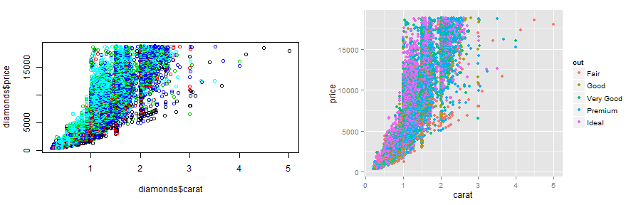
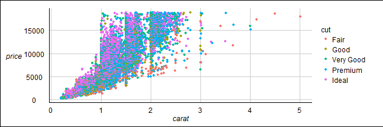
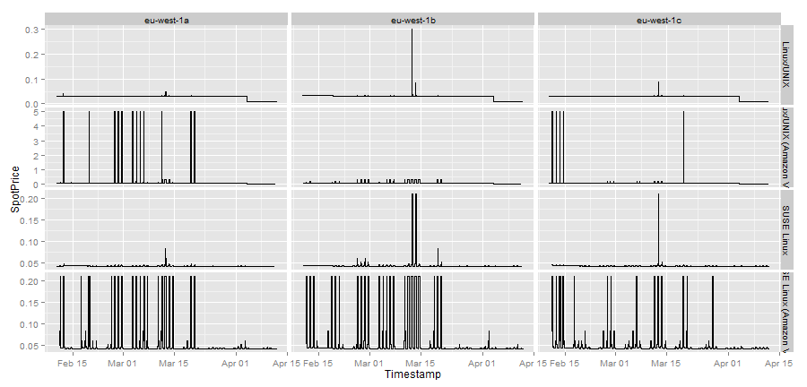
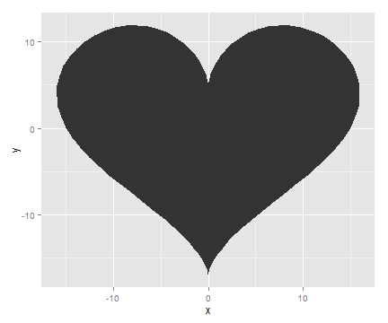

Jujitsu
Graphics + Modelling + Data Munging
http://simplystatistics.org/2013/12/30/some-things-r-can-do-you-might-not-be-aware-of/
Also, Hello World is easy
print("Hello World")
## [1] "Hello World"
Edgaras Dunajevas
Adform
http://simplystatistics.org/2013/12/30/some-things-r-can-do-you-might-not-be-aware-of/
Hello World is easyprint("Hello World")
## [1] "Hello World"

a <- 601:609
b <- letters[1:9]
m <- matrix(a, nrow = 3)
df <- data.frame(a, b)
l <- list(a, b, m, df)
install.packages("mcmc")
library(mcmc)
?metrop
example("metrop")
vignette("package name")
plot has methods for many objects, e.g. plot(lm(y ~ x1 + x2))qplot from ggplot2 is easier to use for more advanced graphics (panels, coloring, smoothing, statistics, legends, themes)plot(x = diamonds$carat, y = diamonds$price, col = diamonds$cut)
library(ggplot2)
qplot(x = carat, y = price, color = cut, data = diamonds)

library(ggthemes)
qplot(x = carat, y = price, color = cut, data = diamonds) + theme_gdocs()

# theme_bw(), theme_economist(), theme_tufte(), theme_wsj(), etc
class(y ~ x1 + x2)
## [1] "formula"
y ~ log(x1) # transform
y ~ x1 - 1 # no intercept
y ~ x1:x2 # interaction
y ~ x1 * x2 # ~ x1 + x2 + x1:x2
y ~ x + I(x^2) # raise to the power of something
y ~ poly(x, degree = 3, raw = FALSE) # x + I(x^2) + I(x^3)
y ~ polym(x1, x2, degree = 3, raw = FALSE) # multivariable polynomial
y ~ x1 + x2 | e # random effects
y ~ . # all other variables
y ~ . - x42 # all other variables except x42
~x1 + x2 # no response
y1 + y2 ~ x1 # multiple response
summarylm.fit <- lm(rating ~ Action + Animation + Comedy + Drama + Documentary + Romance,
data = mv)
summary(lm.fit)
glmnetLiblineaRe1071randomForestplmquantregnlmesemsystemfitforecastvarslapply, sapply, apply, tapply, mapply, replicate
lapply(l, length)[1]
## [[1]]
## [1] 9
sapply(l, length)
## [1] 9 9 9 2
apply(m, 2, function(x) x[1]/max(x))
## [1] 0.9967 0.9967 0.9967
df <- data.frame(city = c("New York", "Vievis"), `2013` = c(1000, 130), `2014` = c(1400,
150), check.names = F, stringsAsFactors = F)
library(xtable)
print(xtable(df), type = "html")
| city | 2013 | 2014 | |
|---|---|---|---|
| 1 | New York | 1000.00 | 1400.00 |
| 2 | Vievis | 130.00 | 150.00 |
options(xtable.type = "html")
library(reshape)
mf <- melt(df, id = 1)
xtable(mf)
| city | variable | value | |
|---|---|---|---|
| 1 | New York | 2013 | 1000.00 |
| 2 | Vievis | 2013 | 130.00 |
| 3 | New York | 2014 | 1400.00 |
| 4 | Vievis | 2014 | 150.00 |
cmf <- cast(mf, city ~ variable)
xtable(cmf)
| city | 2013 | 2014 | |
|---|---|---|---|
| 1 | New York | 1000.00 | 1400.00 |
| 2 | Vievis | 130.00 | 150.00 |
plyr
library(plyr)
smf <- ddply(mf, "city", summarize, maxval = max(value))
xtable(smf)
| city | maxval | |
|---|---|---|
| 1 | New York | 1400.00 |
| 2 | Vievis | 150.00 |
ddply, llply, dlply, ldply, daply, adply, mdply, d_ply, ...
tutorials -> http://plyr.had.co.nz/09-u,
check out http://blog.rstudio.org/2014/01/17/introducing-dplyr/
foreach
library(doParallel)
cl = makeCluster(4)
registerDoParallel(cl)
library(foreach)
out <- foreach(file = list.files(), .combine = rbind) %dopar% {
# %do%
d <- fread(file)
subset(d, year > 2010)
}
stopCluster(cl)
library(devtools) #install Rtools for this to work (on Windows)
library(Rcpp)
cppFunction(
'int fibonacci(const int x) {
if (x == 0) return(0);
if (x == 1) return(1);
return (fibonacci(x - 1)) + fibonacci(x - 2);
}')
sapply(1:10, fibonacci)
## [1] 1 1 2 3 5 8 13 21 34 55
data.tableinherits from data.frame. It offers fast subset, fast grouping, fast update, fast ordered joins and list columns in a short and flexible syntax, for faster development.
library(data.table)
fread(input, sep="auto", sep2="auto", nrows=-1L, header="auto", na.strings="NA",
stringsAsFactors=FALSE, verbose=FALSE, autostart=30L, skip=-1L, select=NULL,
drop=NULL, colClasses=NULL,
integer64=getOption("datatable.integer64"), # default: "integer64"
showProgress=getOption("datatable.showProgress") # default: TRUE
)
library(jsonlite)
library(stringr)
library(lubridate)
cc2json <- system("aws ec2 describe-spot-price-history --instance-types m1.medium",
intern = T)
d <- fromJSON(cc2json)[[1]] #usually d <- read.csv(filename)
d$Timestamp <- gsub("T|\\.000Z", " ", d$Timestamp)
d$Timestamp <- str_trim(d$Timestamp)
d$Timestamp <- parse_date_time(d$Timestamp, "%Y-%m-%d %H:%M:%S")
d$SpotPrice <- as.numeric(d$SpotPrice)
d <- subset(d, !grepl("Windows", ProductDescription))
jsonlite - parse jsons - fromJSONstringr - string munging functions - str_trimlubridate - parse date and time - parse_date_timeqplot(x = Timestamp, y = SpotPrice, data = d, geom = "step") + facet_grid(ProductDescription ~
AvailabilityZone, scales = "free")

heart <- function(t) {
data.frame(x = 16 * sin(t)^3, y = 13 * cos(t) - 5 * cos(2 * t) - 2 * cos(3 *
t) - cos(4 * t))
}
qplot(data = heart(seq(0, 2 * pi, length = 100)), x = x, y = y, geom = "polygon")
